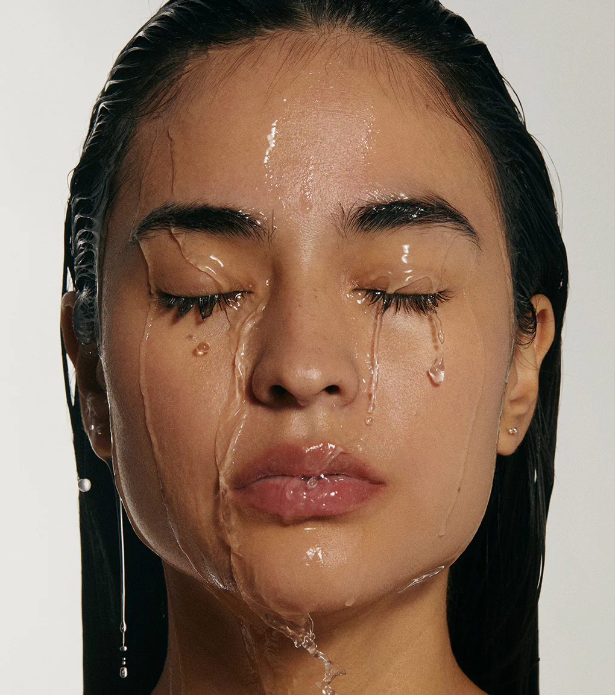

Slow Fashion
Slow fashion encourages consumers to focus on quality, longevity, and intentional shopping habits rather than fast-moving trends. Discover why more people are embracing a slower approach to style.
Refill culture
Refillable beauty products are making sustainability more stylish and accessible than ever. Discover brands creating beautiful skincare and makeup products designed to reduce waste without sacrificing quality.

Ingredient guide
Many brands market themselves as sustainable, but not all eco-friendly claims are genuine. Learn how to identify greenwashing and make more informed choices when shopping for beauty and fashion products.
Green Living
Sustainable living doesn’t have to feel overwhelming. From reusable products to low-waste beauty habits, these simple eco-friendly swaps can help reduce waste and support a greener lifestyle.
Digital Trends
Social media has changed the way people discover beauty, fashion, and wellness trends. While platforms can inspire sustainable habits, they can also encourage overconsumption and fast-moving trend cycles.
Planet First
Many fashion companies are beginning to focus on ethical labor, sustainable materials, and slower production methods. Explore brands working toward a more responsible future for fashion.